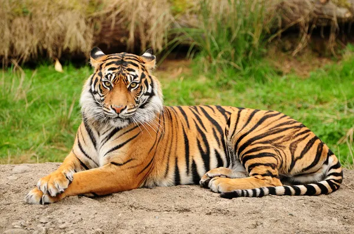
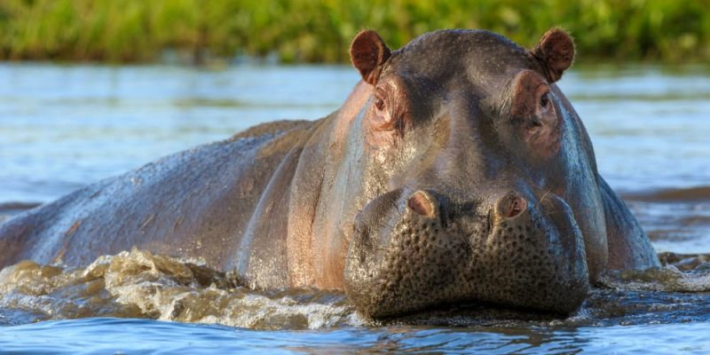
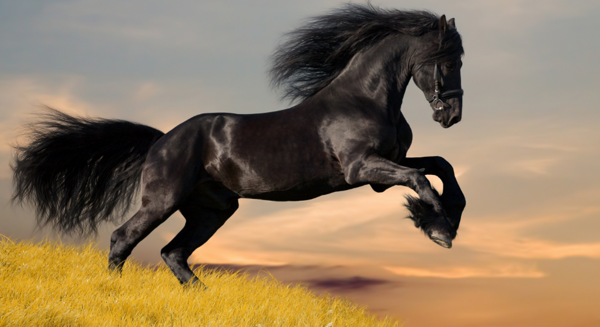
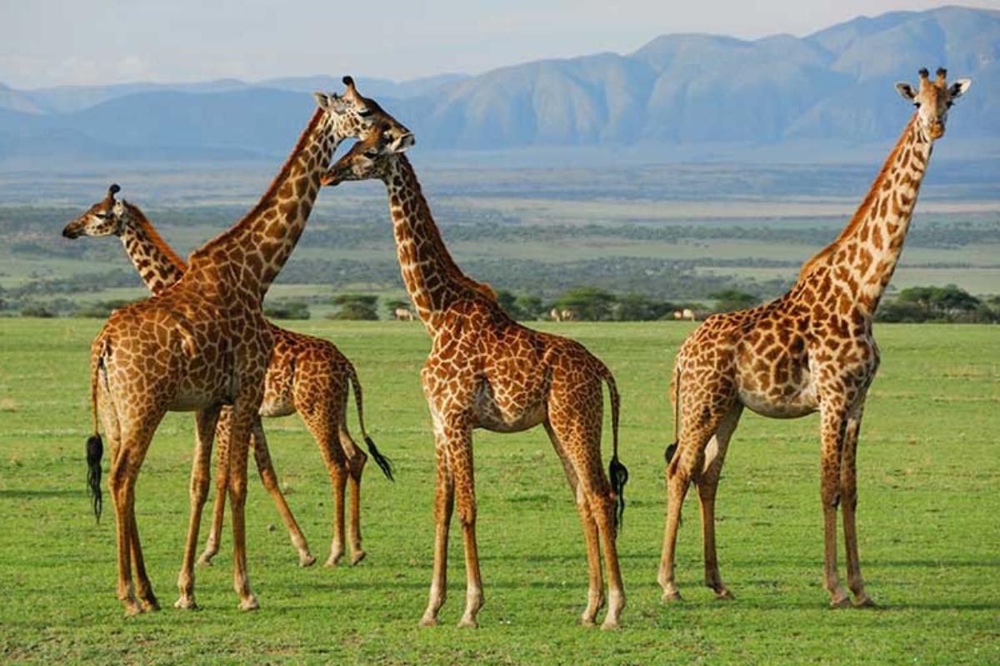
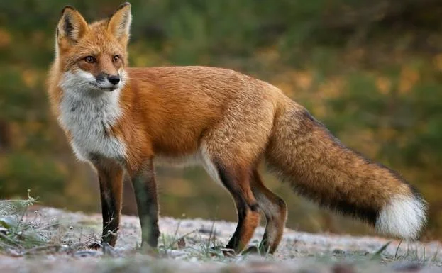

Los mamíferos son una clase de animales vertebrados amniotas en su mayoría homeotermos que poseen glándulas
mamarias productoras de leche con las que alimentan a las crías.
Tigre 🐾

Este es un hermoso animal que vive en la selva y es muy ágil...
- Es animal nacional de la India y de Bangladesh.
- Habita bosques densos y sabanas.
- Rayas naranjas y negras distintivas.
El tigre es una especie muy amenazada
Clasificada como "en peligro de extinción"... Lista Roja de la UICN.
Hipopótamo 🦛

Un adulto puede pesar 800 kilos...
- Se alimenta de hierba y frutos.
- Madurez a los 4-5 años.
- Pasa mucho tiempo en el agua.
Amenazas
Disminución por caza y pérdida de hábitat...
Caballo 🐎

Los caballos son perisodáctilos con pezuñas...
- Grupos de 3 a 20 en libertad.
- Vida media de 25 años.
- Son herbívoros.
Hábitos y Estilo de Vida
Instinto de huida, defensa, y gran curiosidad...
Jirafa 🦒

La jirafa es la más alta de las especies terrestres...
- Cuello de hasta 2 m de largo.
- Lengua adaptada para espinas.
- Esperanza de vida de 25 años.
Estado de conservación
Clasificada como "preocupación menor", pero extirpada en varias regiones.
Zorro 🦊

Astucia, inteligencia y agilidad lo definen...
- Olfato altamente desarrollado.
- Muy territorial.
- Astuto y discreto.
Problemática principal
Transmisor de rabia silvática en Europa Central.